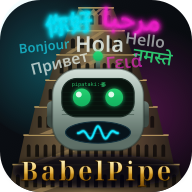

BabelPipe
Traductor de viva voz con tu propio servidor. El móvil solo pone el micro y el altavoz; tu ordenador oye lo que se dice, reconoce en qué idioma va, lo traduce y le devuelve el texto al móvil, que lo lee en voz alta.
- Sin decir el idioma: eliges con quién hablas (inglés, polaco…) y BabelPipe distingue solo quién habla. Lo tuyo lo traduce al idioma del otro, y lo del otro al tuyo.
- Oye con Whisper y traduce con el traductor de Firefox, los dos libres y en tu ordenador: sin servicios de pago y sin mandar nada fuera.
- Espera a que se calle quien habla para leer la traducción, y mientras lee no escucha, para no traducirse a sí mismo.
- Con auricular Bluetooth, cada traducción a su sitio: lo que dice el otro te llega al oído, y lo que dices tú sale por el altavoz del móvil para el otro. Las dos pueden sonar a la vez.
- App de Android o navegador: la app se empareja con el ordenador comparando un código que dicen los dos; también vale un navegador, en el móvil o en otro ordenador.
- El servidor funciona en Linux y en Windows, y también en un servidor sin pantalla.
- Es software libre, con licencia LGPLv3.
Versión 0.1.0, la primera. Probada en un móvil con Android 12 y con auricular Bluetooth, con noticias de la tele en inglés y en polaco, contra servidores Linux; el servidor de Windows se probó en una máquina virtual. Los demás idiomas de la lista aún no se han probado de viva voz. Si se detectan fallos por uso, se agradece el reporte.
Descarga
- Paquete de instalación 0.1.0 (zip, 10 MB), el servidor para Linux y Windows. Lleva dentro la app de Android.
- App para Android (apk), por si la quieres sola.
- Todas las versiones y el código fuente, en GitHub.
Cómo se instala
- En el ordenador, descomprime el zip y ejecuta
./install.sh(Linux) oinstall.bat(Windows, con Python 3.10 o más nuevo). Pregunta tu idioma, los de con quién hablarás y la dirección para el móvil, y descarga los modelos (Whisper, 1,5 GB la primera vez; unos 35 MB por idioma y sentido). - Arráncalo con
./babelpipe.sh(o.\babelpipe.bat). El cortafuegos tiene que dejar pasar el puerto 5100 (TCP). - En el móvil, instala la APK abriéndola con Archivos (Files) de Google, escribe la dirección que dio el instalador y comprueba que el código que enseña es el que dice el ordenador.
El paso a paso, y cómo instalarlo en un servidor, está en el LEEME.
Comprobar que la APK es la nuestra
Las dos huellas sirven para comprobar que lo descargado es lo nuestro y no una copia modificada. No son claves secretas: la segunda es la huella pública del certificado con el que se firman todas nuestras aplicaciones.
APK (0.1.0) SHA-256: 2b7d74efeed6333135edee504b6659c21f3869dfaaac4caa4f9b7d2f18744457
SHA-256: 40:EA:E6:CA:4A:6C:CE:5D:38:D6:61:A4:8D:9B:64:18:25:4F:01:3E:D7:75:83:4A:98:3B:E9:82:73:AF:C2:29
Privacidad
- La conversación va del móvil a tu ordenador y de vuelta, cifrada, y no sale de ahí: no hay servicios de terceros.
- Solo se conecta fuera para descargar los modelos: Whisper desde Hugging Face y los de traducción desde los servidores de Mozilla.
Requisitos
- Un ordenador con soltura: con Whisper medium, unos 1,8 GB de memoria y unos 4-5 s por frase en un procesador de 8 núcleos sin tarjeta gráfica. Con modelos más pequeños gasta menos, pero oye peor.
- Para el móvil: Android 7 o superior, con el motor de voz del propio móvil.
- El móvil y el ordenador, en la misma red (o en una VPN).
Licencia y créditos
BabelPipe es software libre, © 2026 pipataki, con licencia LGPLv3. Oye con faster-whisper y los modelos Whisper (MIT) y traduce con bergamot-translator, el traductor de Firefox (MPL-2.0). La lista completa de piezas y sus licencias va en el fichero AVISOS.md del paquete.
Sus hermanas: Pipe-Políglota, que traduce en el propio móvil y sin conexión; VoiceController para manejar el ordenador, Andro-Kontrol para el móvil y Pipe-Logic para la lógica y las matemáticas.
Contacto
In English
BabelPipe is a spoken translator backed by your own server. The phone only provides the microphone and the speaker; your computer listens with Whisper, tells which language is being spoken, translates with Firefox's translator and sends the text back for the phone to read aloud. Nothing goes to third-party services. With a Bluetooth earpiece, you hear the other person's words in your ear while your own come out of the phone's speaker. The server runs on Linux and Windows; use the Android app or a web browser. Free software (LGPLv3), version 0.1.0. Download the installation package or the Android app. The source code is on GitHub.